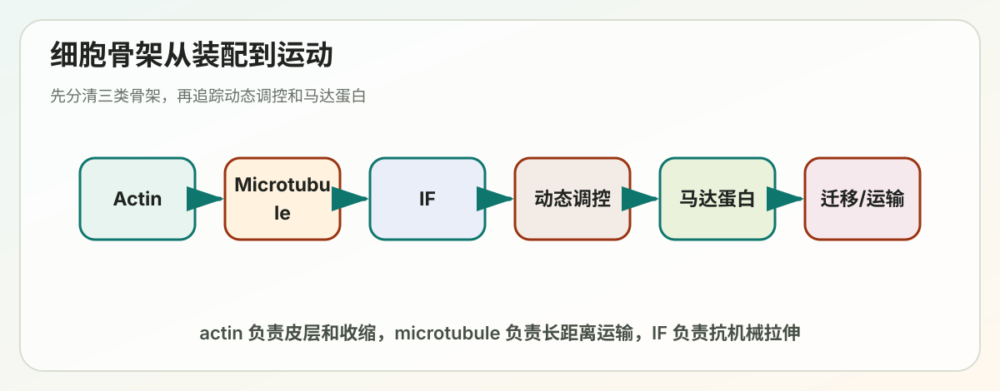

Lecture 14
Lecture 14: Cytoskeleton（细胞骨架）

> 覆盖范围：cytoskeleton overview、actin filaments、microtubules、intermediate filaments、cytoskeletal dynamics、accessory proteins、motor proteins、cell migration。 > 复习目标：能把三类细胞骨架的结构、极性、动态行为、调控蛋白和运动功能对应起来。
---
本讲主线
细胞骨架不是静态支架，而是一套可以快速重排的分子机器。它同时解决四类问题：
1. 形态：细胞为什么能保持形状，为什么上皮细胞、神经元、肌肉细胞形态不同。 2. 组织：细胞器、膜区室和大分子复合物如何在细胞内定位。 3. 运动：囊泡运输、纤毛摆动、肌肉收缩、细胞迁移如何发生。 4. 力学与信号：外界机械刺激如何通过骨架和黏附结构影响细胞行为。
一句话框架：
单体聚合成丝状结构
-> 丝状结构具有极性和动态性
-> accessory proteins 调控装配、解聚、交联和定位
-> motor proteins 把化学能转成机械运动
-> 细胞形态、运输、收缩、迁移由此产生---
考前速记版
| 系统 | 单体 | 直径 | 极性 | 能量核苷酸 | 主要功能 |
|---|---|---|---|---|---|
| Actin filament / microfilament | G-actin | 约 7 nm | 有 + / - 端 | ATP | 细胞皮层、肌肉收缩、细胞迁移、胞质分裂 |
| Microtubule | alpha/beta-tubulin heterodimer | 约 25 nm | 有 + / - 端 | GTP | 细胞器运输、纺锤体、纤毛鞭毛、细胞极性 |
| Intermediate filament | 多种 IF 蛋白 | 约 10 nm | 无明显极性 | 不依赖 ATP/GTP | 抗机械拉伸、核纤层、组织特异性支撑 |
最容易混的点：
- Actin 和 microtubule 都有极性，所以能和方向性 motor proteins 配合。
- Intermediate filament 没有明确极性，主要做机械强度，不承担典型轨道运输。
- Actin 是 ATP-actin 聚合，microtubule 是 GTP-tubulin 聚合。
- Microtubule 的 dynamic instability 来自 GTP cap 的有无。
- Actin treadmilling 来自两端 critical concentration 不同。
- Myosin 多数沿 actin 向 + 端运动；dynein 通常沿 microtubule 向 - 端运动；kinesin 多数向 + 端运动。
---
I. 细胞骨架概述
1.1 为什么细胞需要骨架
细胞内部是拥挤、柔软、动态的环境。如果只有膜和细胞质，细胞会难以维持形态，也无法把内部运输和空间分区组织起来。细胞骨架提供了三种能力：
- 支撑力：抵抗外界拉伸和挤压。
- 轨道：让 motor proteins 携带囊泡、细胞器和蛋白复合物移动。
- 可重塑结构：在迁移、分裂、吞噬和形态变化时快速装配和解聚。
细胞骨架的共同逻辑是：许多小亚基通过非共价相互作用聚合成线性聚合物，因此既能稳定存在，又能在需要时迅速重排。
1.2 三类骨架的功能分工
| 需求 | 主要骨架 | 典型例子 |
|---|---|---|
| 细胞表面变形 | Actin | lamellipodia、filopodia、胞吞、胞质分裂环 |
| 长距离运输 | Microtubule | ER/Golgi 定位、轴突运输、纺锤体 |
| 抗拉伸强度 | Intermediate filament | 皮肤角蛋白、核纤层、神经丝 |
| 细胞整体迁移 | Actin + microtubule + adhesion | 前缘突出、黏附形成、后缘收缩 |
---
II. 三类细胞骨架的结构
2.1 Actin filament：细胞皮层和运动的核心
Actin 单体称为 G-actin，聚合后形成 F-actin。每个 actin 单体都能结合 ATP 或 ADP，聚合时通常以 ATP-actin 加到纤维末端。
Actin filament 的特点：
- 由两条螺旋状 protofilament 缠绕形成。
- 具有结构极性：barbed end = + end，pointed end = - end。
- + 端通常增长更快。
- 常集中在细胞皮层、微绒毛、应力纤维、迁移前缘和收缩环中。
Actin 的功能要从“推、拉、撑、割”四个词理解：
- 推：前缘 actin 聚合推动膜向前形成 lamellipodia。
- 拉：myosin II 牵拉 actin 产生收缩。
- 撑：微绒毛内部 actin bundle 支撑突起。
- 割：胞质分裂时 actin-myosin contractile ring 收缩，把两个子细胞分开。
2.2 Microtubule：细胞内长距离运输轨道
Microtubule 的基本单元是 alpha/beta-tubulin heterodimer。这些二聚体首尾相接形成 protofilament，通常 13 条 protofilament 围成中空管状结构。
Microtubule 的特点：
- 直径约 25 nm，是三类骨架中最粗的一类。
- 具有结构极性：alpha-tubulin 暴露的一端通常是 - 端，beta-tubulin 暴露的一端是 + 端。
- + 端动态性强，- 端常锚定在 centrosome 或 microtubule-organizing center。
- beta-tubulin 上的 GTP 水解决定 microtubule 是否稳定。
Microtubule 的功能：
- 为 kinesin 和 dynein 提供运输轨道。
- 维持 ER、Golgi 等细胞器的空间分布。
- 形成有丝分裂纺锤体，牵引染色体分离。
- 构成纤毛和鞭毛的 axoneme，驱动流体运动或细胞运动。
2.3 Intermediate filament：抗机械应力的绳索
Intermediate filament 的结构与 actin、microtubule 不同。它的亚基先形成 coiled-coil dimer，再形成 antiparallel tetramer，进一步横向和纵向组装成绳索状纤维。
关键特点：
- 没有明确 + / - 端。
- 不依赖 ATP 或 GTP 水解进行装配。
- 更稳定，主要提供机械强度。
- 具有组织特异性，因此也常用于病理诊断。
常见 intermediate filament：
| 类型 | 主要位置 | 功能或意义 |
|---|---|---|
| Keratin | 上皮细胞 | 抵抗摩擦和拉伸，连接 desmosome / hemidesmosome |
| Vimentin | 间充质细胞 | 支持细胞形态和迁移 |
| Neurofilament | 神经元轴突 | 维持轴突直径 |
| Nuclear lamins | 细胞核内侧 | 支持核膜，参与染色质组织 |
一个常考逻辑：上皮组织承受机械力时，力通过 desmosome 传给 keratin intermediate filament 网络，再跨细胞传播到组织层面。
---
III. 细胞骨架的动态行为
3.1 聚合的基本过程
细胞骨架聚合通常包括三个阶段：
1. Nucleation：少数单体形成稳定聚合核心，是最慢、最受调控的一步。 2. Elongation：单体快速加到末端。 3. Steady state：聚合与解聚达到动态平衡。
细胞常把调控重点放在 nucleation 上，因为一旦成核成功，纤维就能快速延长。
3.2 Actin treadmilling
Actin filament 的 + 端和 - 端临界浓度不同。+ 端更容易加单体，- 端更容易丢单体。当游离 actin 浓度处在两端临界浓度之间时，会出现：
+ 端持续加 ATP-actin
纤维内部 ATP 水解为 ADP
- 端持续释放 ADP-actin
整体长度可近似不变，但亚基在“流动”这就是 treadmilling。它让细胞能在保持局部结构的同时不断更新 actin 网络。
3.3 Microtubule dynamic instability
Microtubule 的动态不稳定性由 GTP cap 控制。
- 新加入的 tubulin 带 GTP。
- 聚合后 beta-tubulin 上的 GTP 会水解为 GDP。
- 如果 + 端仍保留 GTP-tubulin cap，microtubule 稳定并继续增长。
- 如果 GTP 水解追上了聚合速度，GTP cap 消失，GDP-tubulin 构象偏弯曲，microtubule 快速解聚，这叫 catastrophe。
- 如果重新获得 GTP cap，就会发生 rescue，重新增长。
复习时把 dynamic instability 记成一个判断题：
GTP cap 在 -> 增长/稳定
GTP cap 丢失 -> catastrophe
重新获得 GTP cap -> rescue3.4 Intermediate filament 的动态调控
Intermediate filament 比前两者稳定，但不是完全不变。典型调控方式是 phosphorylation。
例子：有丝分裂时 nuclear lamins 被磷酸化，核纤层解体，核膜破裂；分裂结束后去磷酸化，核纤层重新组装。
---
IV. Accessory proteins 如何调控骨架
4.1 Actin-binding proteins
Actin 的功能几乎都需要 actin-binding proteins 参与。
| 蛋白 | 作用 | 记忆方式 |
|---|---|---|
| Arp2/3 complex | 在已有 actin 侧面成核，形成分支网络 | lamellipodia 的分支 actin |
| Formin | 促进不分支直线 actin 生长 | filopodia、应力纤维、收缩环 |
| Profilin | 促进 ADP-actin 换 ATP，并把单体送到 + 端 | 帮助增长 |
| Thymosin beta4 | 结合 actin 单体，阻止聚合 | 暂存单体 |
| Cofilin | 结合 ADP-actin 区域，促进切割和解聚 | 加速更新 |
| Capping protein | 盖住末端，阻止继续生长或缩短 | 封端 |
| Gelsolin | Ca2+ 调控的切割和封端蛋白 | 快速重塑 |
| Fimbrin / fascin | 形成紧密平行 actin bundle | 微绒毛、filopodia |
| alpha-actinin | 形成较疏松 bundle | stress fibers |
| Filamin | 交联成网状 actin gel | 细胞皮层 |
分支网络和直线束的区别非常重要：
- Arp2/3：从已有纤维侧面长出约 70 度分支，适合推平的膜片。
- Formin：黏在 + 端，连续加入 actin，适合长直纤维。
4.2 Microtubule-associated proteins
Microtubule 的调控蛋白包括：
- gamma-TuRC：在 centrosome 中帮助 microtubule 成核。
- MAPs：稳定 microtubules，调节间距和组织。
- Tau：神经元轴突中稳定 microtubules；异常聚集与神经退行性疾病有关。
- Katanin：切割 microtubules，帮助重排。
- +TIPs：结合 microtubule + 端，调控增长端与细胞皮层或黏附结构的连接。
4.3 Intermediate filament-associated proteins
Intermediate filaments 常通过连接蛋白与细胞连接、微管和 actin 网络整合。
- Plectin：把 intermediate filaments 连接到 microtubules、actin 和黏附结构。
- Desmoplakin：在 desmosome 中把 cadherin 复合体连接到 keratin。
- Lamin-binding proteins：把 nuclear lamina 与核膜、染色质联系起来。
---
V. Myosin：actin-based motor proteins
5.1 Motor protein 的共同工作方式
Motor proteins 把 ATP 水解能转成定向运动。它们通常有：
- motor domain：结合轨道并水解 ATP。
- coiled-coil 或 linker：传递构象变化。
- cargo-binding tail：结合货物、膜泡或其他结构。
核心逻辑：
ATP 结合 -> motor 与轨道亲和力改变
ATP 水解 -> 构象预备
Pi/ADP 释放 -> power stroke
循环重复 -> 方向性运动5.2 Myosin 家族
Myosin 大多沿 actin filament 向 + 端运动。不同类型的 myosin 做不同工作：
| Myosin 类型 | 功能 |
|---|---|
| Myosin II | 肌肉收缩、应力纤维、胞质分裂收缩环 |
| Myosin V | 沿 actin 运输囊泡和细胞器 |
| Myosin I | 连接膜和 actin，参与膜形态调节 |
5.3 肌肉收缩的 actin-myosin 机制
骨骼肌的基本单位是 sarcomere：
- actin thin filament 从 Z disc 向中间伸出。
- myosin thick filament 位于中间。
- myosin head 周期性结合 actin 并产生 power stroke。
- sarcomere 缩短，但 actin 和 myosin filament 本身长度不变。
收缩调控依赖 Ca2+：
1. 神经信号引起肌浆网释放 Ca2+。 2. Ca2+ 结合 troponin。 3. tropomyosin 从 actin 的 myosin-binding site 上移开。 4. myosin head 可以结合 actin，产生收缩。
常考点：ATP 对肌肉不是只提供能量，也负责让 myosin 从 actin 上解离。死亡后 ATP 耗尽，myosin 不能脱离 actin，会出现 rigor mortis。
---
VI. Kinesin 和 dynein：microtubule-based motors
6.1 Kinesin
Kinesin 多数沿 microtubule 向 + 端运动。在典型动物细胞中，microtubule - 端靠近 centrosome，+ 端朝向细胞周边，所以 kinesin 常负责向外周运输。
典型功能：
- 把分泌囊泡、膜蛋白、细胞器运向细胞周边。
- 在神经元轴突中进行 anterograde transport。
- 有丝分裂中推动纺锤体微管滑动。
6.2 Dynein
Dynein 通常沿 microtubule 向 - 端运动，因此常负责向 centrosome 或细胞中心运输。
典型功能：
- endosome、lysosome 等向细胞中心运输。
- 神经元中的 retrograde transport。
- 纤毛和鞭毛中产生 microtubule 滑动。
- 参与纺锤体定位和染色体运动。
Dynein 本身巨大且复杂，常需要 dynactin 复合体帮助连接 cargo 并增强运动过程性。
6.3 Cilia 和 flagella
运动性纤毛和鞭毛的核心结构常是 9+2 axoneme：
- 9 组外周 microtubule doublets。
- 中央 2 条 microtubules。
- dynein arms 让相邻 doublets 发生滑动。
- 因为有连接结构限制，滑动转化为弯曲摆动。
非运动性 primary cilium 常是信号感受结构，参与 Hedgehog 等通路。它依赖 intraflagellar transport 把蛋白运入和运出纤毛。
---
VII. 细胞迁移机制与信号调控
7.1 迁移的四步循环
一个贴壁细胞向前迁移通常包括：
1. 前缘突出：actin 聚合推动膜形成 lamellipodia 或 filopodia。 2. 形成新黏附：integrin 与 ECM 结合，形成 focal adhesion。 3. 细胞体前移：actin-myosin 收缩把细胞体拉向前方。 4. 后缘脱附：旧黏附解离，细胞尾部收回。
这个循环不是单纯 actin 的事情，还需要 microtubules 参与极性建立、运输膜泡和调控黏附更新。
7.2 Rho family GTPases
细胞迁移中最核心的三类小 GTPase：
| GTPase | 主要输出 | 结果 |
|---|---|---|
| Cdc42 | filopodia、细胞极性 | 探路 |
| Rac | lamellipodia、Arp2/3 分支 actin | 向前铺展 |
| Rho | stress fibers、myosin II 收缩 | 牵拉和张力 |
它们像开关一样在 GTP-bound active 和 GDP-bound inactive 状态间切换：
- GEF 激活。
- GAP 失活。
- GDI 抑制并帮助在细胞内转运。
7.3 Focal adhesion 的功能
Focal adhesion 是细胞迁移中的力学和信号平台。
组成逻辑：
ECM
-> integrin
-> talin / kindlin / vinculin / paxillin / FAK
-> actin stress fibers功能：
- 把 actin 产生的力传给 ECM。
- 感受 ECM 硬度。
- 激活 FAK、Src、Rho GTPase 等信号。
- 在迁移时不断形成和解离。
---
常考比较
Actin vs Microtubule
| 对比 | Actin | Microtubule |
|---|---|---|
| 单体 | G-actin | alpha/beta-tubulin |
| 核苷酸 | ATP | GTP |
| 结构 | 双股螺旋纤维 | 13 protofilaments 中空管 |
| 主要位置 | 细胞皮层、前缘、收缩结构 | 细胞内部放射状网络、纺锤体、纤毛 |
| 动态关键词 | treadmilling | dynamic instability |
| motor | myosin | kinesin、dynein |
Accessory proteins 的答题套路
遇到“某蛋白如何影响细胞骨架”的题，可以按四类回答：
1. 是否影响 nucleation。 2. 是否影响 elongation / capping。 3. 是否影响 severing / depolymerization。 4. 是否影响 bundling / crosslinking / anchoring。
细胞迁移的答题套路
外界信号
-> PI3K / Rho GTPases 建立前后极性
-> 前缘 actin 聚合产生 protrusion
-> integrin 形成新 focal adhesion
-> myosin II 收缩牵引细胞体
-> 后缘黏附解离
-> microtubules 运输膜和调控极性---
自测题
1. 为什么 microtubule 会发生 dynamic instability，而 intermediate filament 不会以同样方式发生？ 2. Arp2/3 和 formin 都能促进 actin 聚合，它们产生的网络形态有什么不同？ 3. 如果一个细胞中 cofilin 活性过高，actin 网络会发生什么变化？ 4. 为什么 kinesin 和 dynein 能在同一条 microtubule 上产生相反方向的运输？ 5. 贴壁细胞迁移时，actin、myosin、integrin 和 Rho GTPase 分别承担什么角色？
---
一页总结
细胞骨架复习时不要把三类 filament 当作孤立名词。真正的主线是：聚合物的结构和极性决定动态行为，动态行为由调控蛋白控制，调控后的骨架再与 motor proteins 和黏附结构配合，产生形态、运输、收缩和迁移。